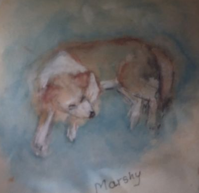
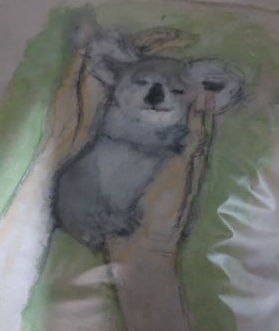
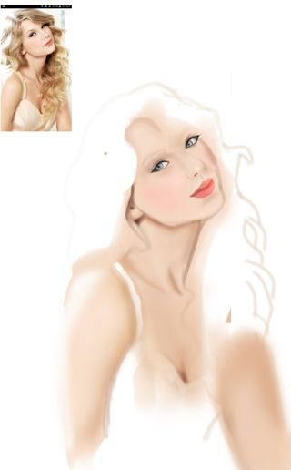
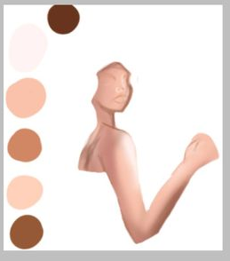

Shreeti Sharma
Introduction
My name is Shreeti, and I am a eight grader. I am from Nepal.
I am aiming to be a software engineer in the future, I am passionate about programming, and machine learning since my childhood.
Since I was a child, i was curious to know how computer works, and i wannted my future self to be a programmer someday.
Interest besides programming
In addition, I have a strong feeling for art, i do both digital and tradional art works. Currently I am learning to Animate.
I love to spend most of my time being alone, I'm not used to socialize, as i find it tough.
I am also, currently learning spanish on duolingo, if i ever go to europe in the future.
furthermore, I love making comics as well!
  
 
Movies I love:

- Home alone
- Home alone is top of my favorate list.
It is a comedy movie about a boy being alone at home trying to save his house from being robbed by 2 thiefs.

- Harry potter
- Harry Potter is in my second top list as i find it very adventurous and emotional. Its about a boy named Harry, a wichard, who defeats the villan that killed most of his friend and even his parents.

- Captain underpants
- Captain underpants is in my third favorate movie list. It inspired me to make comics

- Black beauty
- Black beauty is in my forth favorate movie, it's about a hourse who was sold by the owner, the movie talks about animal abuse, Im a animal lover and this movie was really emotional to me

- charlie chaplin
- Charlie chaplin is my fifth favorate movie. It's a comedy movie played my the actor Charlie.

- Life of PI
- Life of PI was the first emotional movie that I cryed watching. Its about the friendship among a man and a tiger.
Favorate Books

- The Lord of the Rings
by J. R. R. Tolkien

- Harry potter
by J. K. Rowling

- To Kill a Mockingbird
by Harper Lee

- The Diary Of a Young Girl
by Anne Frank

- Diary of a wimpy kid
by Jeff Kinney
Pets I have.
- Marshy, (dog)
- Bruno, (dog)
- Blade, also called as Kale (dog)
- 1 Fish
Burger
Tofu
Pizza
Mushroom
sandwich
Chicken drumsticks
My personality
Growing up, i have always been an introvert.
When i go to the event, it's hard for me to introduce myself with other new people, so i just stick around with the ones i already know.
I don't have a social anxiety, and i do not want to develop one. I have also taken part in public speaking at my school to improve my speaking skills and not be nervous with other people.
I have given speech at many events at school, like parents day, I have also been in the school radio once to recite a poem.
QNA (QUESTIONS AND ANSWERS)
| QUESTIONS |
ANSWERS |
| Which is your favorate programming launguage? |
Python, I've also learned the basics! |
| What's your favorate websites? |
Pintrest!, it has plenty of art works reference to practice my art skills. |
| What do you want to do after you be expert at programming and at machine learning? |
It's a big dream but, i want to work at google or at NASA. |
Favorate Quote
It's okay to struggle, It's not okay to give up -GABE GRUNEWALD
Contact me on facebook :)
Thanks for checking out!